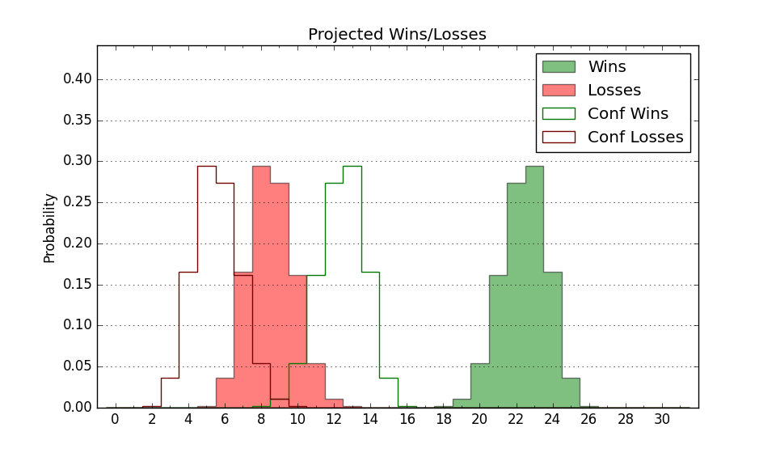

| Home | Game Probabilities | Conferences | Preseason Predictions | Odds Charts | NCAA Tournament |
| City: | Memphis, Tennessee | |
| Conference: | American (3rd)
| |
| Record: | 7-2 (Conf) 17-5 (Overall) | |
| Ratings: | Comp.: 15.4 (51st) Net: 15.4 (53rd) Off: 110.2 (48th) Def: 94.8 (54th) SoR: 75.2 (27th) |
| Remaining | ||||||
|---|---|---|---|---|---|---|
| Date | Opponent | Win Prob | Pred. | |||
| 2/4 | Tulane (104) | 81.1% | W 88-77 | |||
| 2/8 | @ South Florida (158) | 69.1% | W 79-73 | |||
| 2/12 | Temple (119) | 84.2% | W 79-67 | |||
| 2/16 | UCF (63) | 69.9% | W 73-67 | |||
| 2/19 | @ Houston (1) | 7.2% | L 60-78 | |||
| 2/23 | @ Wichita St. (115) | 60.1% | W 72-69 | |||
| 2/26 | Cincinnati (73) | 74.7% | W 80-72 | |||
| 3/2 | @ SMU (212) | 77.8% | W 80-71 | |||
| 3/5 | Houston (1) | 20.9% | L 65-74 | |||
| Previous | Game Score | |||||
| Date | Opponent | Win Prob | Result | Off | Def | Net |
| 11/7 | @Vanderbilt (87) | 49.2% | W 76-67 | 7.5 | 5.1 | 12.5 |
| 11/15 | @Saint Louis (95) | 52.4% | L 84-90 | 1.9 | -8.6 | -6.7 |
| 11/20 | VCU (80) | 75.6% | W 62-47 | -18.3 | 21.7 | 3.4 |
| 11/24 | (N) Seton Hall (60) | 53.6% | L 69-70 | -3.8 | 1.6 | -2.3 |
| 11/25 | (N) Nebraska (98) | 67.9% | W 73-61 | 6.4 | 4.5 | 11.0 |
| 11/27 | (N) Stanford (90) | 66.0% | W 56-48 | -16.9 | 23.8 | 7.0 |
| 11/30 | North Alabama (292) | 96.1% | W 87-68 | -2.6 | -3.2 | -5.8 |
| 12/3 | Mississippi (103) | 81.0% | W 68-57 | -8.7 | 9.6 | 0.9 |
| 12/6 | Little Rock (327) | 97.4% | W 87-71 | -10.8 | -0.2 | -11.0 |
| 12/10 | (N) Auburn (37) | 46.4% | W 82-73 | 7.3 | 6.5 | 13.8 |
| 12/13 | @Alabama (6) | 14.0% | L 88-91 | 9.1 | -2.5 | 6.6 |
| 12/17 | Texas A&M (48) | 63.9% | W 83-79 | 6.1 | -0.4 | 5.7 |
| 12/21 | Alabama St. (347) | 98.3% | W 83-61 | -11.3 | 2.8 | -8.4 |
| 12/29 | South Florida (158) | 88.4% | W 93-86 | -4.1 | -10.3 | -14.4 |
| 1/1 | @Tulane (104) | 55.7% | L 89-96 | -2.4 | -5.9 | -8.2 |
| 1/7 | East Carolina (232) | 93.6% | W 69-59 | -18.9 | 7.0 | -12.0 |
| 1/11 | @UCF (63) | 40.6% | L 104-107 | 22.1 | -16.6 | 5.5 |
| 1/15 | @Temple (119) | 61.1% | W 61-59 | -11.6 | 13.8 | 2.3 |
| 1/19 | Wichita St. (115) | 83.7% | W 88-78 | 20.0 | -16.7 | 3.3 |
| 1/22 | @Cincinnati (73) | 46.5% | W 75-68 | 7.6 | 6.4 | 14.0 |
| 1/26 | SMU (212) | 92.3% | W 99-84 | 7.0 | -16.0 | -9.0 |
| 1/29 | @Tulsa (267) | 85.5% | W 80-68 | 5.9 | -4.0 | 1.9 |
| Stats & Trends | |||||
|---|---|---|---|---|---|
| Current | Day | Week | Month | Season | |
| Composite | 15.4 | +0.0 | -0.5 | +0.2 | -2.0 |
| Comp Rank | 51 | -1 | -8 | -6 | -19 |
| Net Efficiency | 15.4 | +0.0 | -0.5 | +0.6 | -- |
| Net Rank | 53 | -1 | -7 | +7 | -- |
| Off Efficiency | 110.2 | +0.2 | +0.3 | +2.4 | -- |
| Off Rank | 48 | +2 | -- | +20 | -- |
| Def Efficiency | 94.8 | -0.2 | -0.8 | -1.8 | -- |
| Def Rank | 54 | -- | -1 | +2 | -- |
| SoS Rank | 70 | -7 | -31 | +5 | -- |
| Exp. Wins | 22.4 | +0.1 | +0.2 | +0.5 | +1.9 |
| Exp. Conf Wins | 12.4 | +0.1 | +0.2 | +0.5 | +0.4 |
| Conf Champ Prob | 2.0 | -0.0 | -0.6 | -0.3 | -22.9 |

| Advanced Stats | ||
|---|---|---|
| Stat | Value | Rank |
| Off Eff FG % | 0.548 | 36 |
| Off Ast Ratio | 0.167 | 36 |
| Off ORB% | 0.303 | 87 |
| Off TO Rate | 0.154 | 156 |
| Off FT Ratio | 0.364 | 59 |
| Def Eff FG % | 0.453 | 32 |
| Def Ast Ratio | 0.133 | 107 |
| Def ORB% | 0.285 | 255 |
| Def TO Rate | 0.188 | 38 |
| Def FT Ratio | 0.345 | 257 |